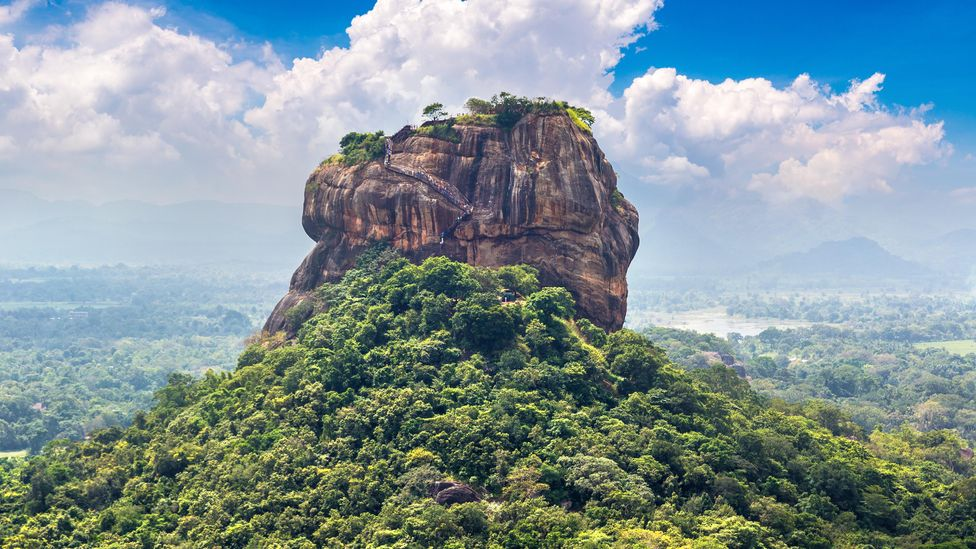

Located in the Matale district, Dambulla Cave Temple is a set of more
than 80 large rock-cut, cave temples in Central Sri Lanka. However,
majority of the attractive murals and Buddha statues are concentrated
in 5 main shrines which are the most impressive. Dambulla Cave Temple
Complex holds an important place in the history of Buddhism because of
the fact that it has been continuously used as a place of worship for
more than two centuries now. Another specialty is that the caves have
been painted in such a manner that devotees can systematically move
through the spaces and rituals at the same time.

One of the number one things to do in Sigiriya is visit the iconic
rock.
"When you see it for the first time it is pretty darn impressive. It
rises imposingly out of the ground, and looks equally as mysterious
and dramatic from close up and from a distance. In fact, I'd
probably say I preferred the view from a distance, as the flat
scenery all around only adds to it's wonder."
- Riley Swift
Ancient City of Sigiriya on UNESCO World Heritage Convention
Sigiriya is one of the most valuable historical monuments of Sri Lanka.
Referred by locals as the Eighth Wonder of the World this ancient palace
and fortress complex has significant archaeological importance and
attracts thousands of tourists every year. It is probably the most
visited tourist destination of Sri Lanka. The palace is located in the
heart of the island between the towns of Dambulla and Habarane on a
massive rocky plateau 370 meters above the sea level. Sigiriya rock
plateau, formed from magma of an extinct volcano, is 200 meters higher
than the surrounding jungles. Its view astonishes the visitors with the
unique harmony between the nature and human imagination.
The fortress complex includes remnants of a ruined palace, surrounded by
an extensive network of fortifications, vast gardens, ponds, canals,
alleys and fountains. The surrounding territories of Sigiriya were
inhibited for several thousand years. Since 3th century BC the rocky
plateau of Sigiriya served as a monastery. In the second half of the 5th
century king Kasyapa decided to construct a royal residence here. After
his death Sigiriya again became a Buddhist monastery until the 14th
century, when it was abandoned. The main entrance is located in the
northern side of the rock. It was designed in the form of a huge stone
lion, whose feet have survived up to today but the upper parts of the
body were destroyed. Thanks to this lion the palace was named Sigiriya.
The term Sigiriya originates from the word Sihagri, i.e. Lion Rock. The
western wall of Sigiriya was almost entirely covered by frescoes,
created during the reign of Kasyapa. Eighteen frescoes have survived to
this day.
The frescoes are depicting nude females and are considered to be either
the portraits of Kasyapa's wives and concubines or priestess performing
religious rituals. Despite the unknown identity of the females depicted
in the frescoes, these unique ancient paintings are celebrating female
beauty and have incredible historical significance. One of the most
striking features of Sigiriya is its Mirror wall. In the old days it was
polished so thoroughly that the king could see his reflection in it. The
Mirror wall is painted with inscriptions and poems written by the
visitors of Sigiriya. The most ancient inscriptions are dated from the
8th century. These inscriptions are proving that Sigiriya was a tourist
destination more than a thousand years ago. Today, painting on the wall
is strictly prohibited.
A welcome effect of visiting during the pandemic meant my partner and I
had the entire complex to ourselves for several hours. While the
once-plastered-and polished finishings of the water gardens have
disappeared with time, we could still see the brick foundation outlines
of the pools, fountains and streams that fill with water during the
rainy season. One area, known as the "miniature water gardens" (not-so
miniature; measuring 30m wide and 90m long), was split into five
sections with several unique features including a snake-shaped stream
that required structural planning way ahead of its time. "A striking
feature is the use of these water-surrounds with pebbled or marbled
floors, covered by shallow, slowly moving water. These, no doubt, served
as a cooling device and at the same time had great aesthetic appeal,
creating interesting visual and sound effects," wrote Bandaranayake.
Theorised to have been used by the royal family and Kasyapa's consort of
women, these fountains and pools, especially the large pond on top of
Sigiriya, were designed as swimming pools to give relief from the hot
South Asian sun, complete with stone steps leading down into the water.
But beyond their beauty and practicality, the water gardens had another
purpose. "Kasyapa wanted to present water in a particular way," said
Weerasinghe. As well as being used for pleasure, they also sent a strong
message of his power and ingenuity to anyone who doubted King Kasyapa,
especially Mahavihara monks, who made up the most powerful monastery in
Anuradhapura and were in favour of his father.
Sri Lanka Travel Guide:
How to Climb Sigiriya Rock Fortress
It may not look like much more than a large rock....